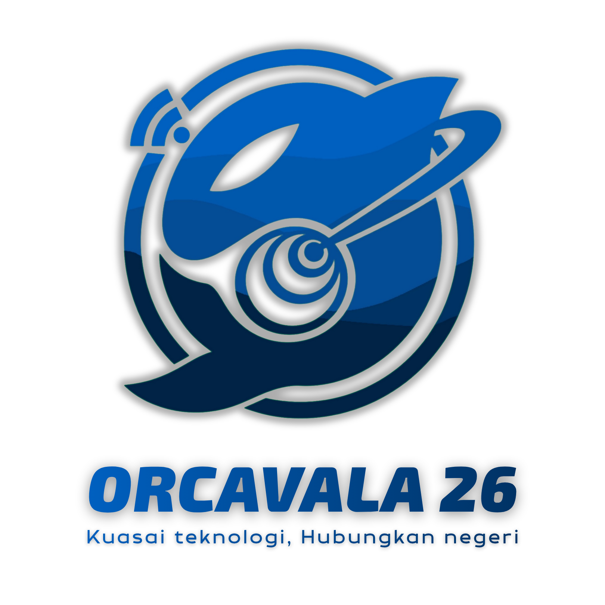

Angkatan 2026 · Sistem Telekomunikasi
Origin of ’26 Telecom
Orcavala adalah identitas angkatan 2026: autentik, saling terhubung, dan menjangkau jauh. Di sini kami menyimpan materi kuliah dan cerita di balik nama serta logo angkatan.

Filosofi nama
Orca + Vala
Orcavala adalah gabungan dua kata yang masing-masing membawa makna mendalam.
Orca
Diambil dari paus orca (Orcinus orca), mamalia laut yang cerdas, komunikatif, dan bekerja sama dalam kelompok (pod) yang solid. Ini melambangkan kecerdasan sistem, keandalan jaringan, dan kepemimpinan dalam industri.
Vala
Dalam berbagai bahasa dan etimologi, vala memiliki beberapa arti yang saling melengkapi:
- Kekuatan / perlindungan (Jermanik kuno/Nordik): jaringan yang kuat, stabil, dan aman.
- Penjaga / pengawal (akar kata Sanskerta): entitas yang menjaga dan melindungi kelancaran komunikasi.
- Gelombang / keberanian (penamaan modern): kemampuan menerjang tantangan dan terus berkembang dinamis.
Jargon Kita
“Kuasai teknologi, Satukan negeri”
Wujud kemandirian teknologi yang cerdas dan progresif dalam menghubungkan serta menyatukan seluruh negeri.
Kepanjangan Orcavala
Origin of ’26 Telecom: Advanced Vision and Linked Antennas
Orisinal Telkom 26: Visi Andal dan Lintas Antena
Orisinal Telkom 26
Angkatan Sistem Telekomunikasi 2026 yang autentik, punya identitas khas, dan menjadi pelopor tanpa mengekor angkatan lain.
Visi Andal
Tujuan bersama yang kokoh, terarah, dan dapat diandalkan, baik secara akademik maupun solidaritas.
Lintas Antena
Representasi teknis telekomunikasi (gelombang, sinyal, jaringan) sekaligus simbol bahwa angkatan ini menghubungkan ide, menyebarkan pengaruh positif, dan menjangkau ranah luas tanpa batas.
Makna logo
Arti tiap elemen
Logo Orcavala memadukan fauna laut (paus orca) dengan simbol teknologi dan telekomunikasi. Biru tua pada logo menjadi warna aksen situs ini.

Connecting People · Empowering Tomorrow

Paus orca
Melambangkan kecerdasan, kerja sama kelompok yang kuat, dan navigasi yang andal. Bentuknya yang dinamis dan melengkung menggambarkan kelincahan dalam mengikuti perkembangan teknologi.
Sinyal
Ikon di bagian atas ini melambangkan bidang utama, yaitu telekomunikasi, konektivitas nirkabel, dan pancaran jaringan internet yang luas.

Cincin Orbit
Memotong tubuh orca, menyimbolkan jangkauan global, konektivitas tanpa batas, serta ekosistem jaringan yang saling terhubung dan berkelanjutan (networking).

Lingkaran Orbit
Pola melingkar di tengah menyerupai mata sekaligus gelombang frekuensi atau pusaran data. Ia melambangkan fokus, visi masa depan, serta pusat penerimaan dan penyebaran informasi.

Gelombang
Pola melingkar di tengah menyerupai mata sekaligus gelombang frekuensi atau pusaran data. Ia melambangkan fokus, visi masa depan, serta pusat penerimaan dan penyebaran informasi.
Tentang angkatan
Angkatan 2026 · Sistem Telekomunikasi
Kami belajar, tumbuh, dan membangun koneksi bersama sebagai Orcavala.